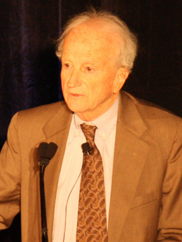
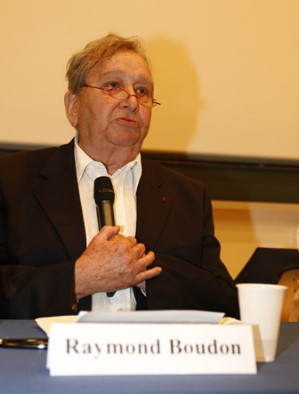
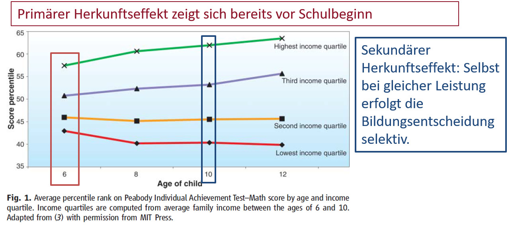

Vorlesung Empirische Bildungsforschung
Sitzung 4: Theorieansätze der EBF
Previously on ....
- Ziele der Bildungsforschung
- Erklärung = Theorie
- Fokus: Bildungsentscheidungen
In Krisen sind drei Dinge anscheinend essentiell...
Ablauf und Lernziele
- Unterschiedliche Theoriestränge der Bildungsforschung kennen.
- Unterschiedliche Menschenbilder beschreiben können.
- Das Rationalitätsprinzip von Karl Popper anwenden können.
- Grenzen der Rationaliät bennen können.
Theorien der Bildungsforschung
- Schichtspezifische Sozialisationsforschung (Zirkelhypothese)
Schuster ...

Die Zirkelhypothese
Es folgt ein kurzer Auszug aus der Literatur
“Die Sozialisation durch den Beruf prägt in der Regel bei Mitgliedern der sozialen Unterschicht andere Züge des Sozialcharakters als bei Mitgliedern der Mittel- und Oberschicht; während der Sozialisation durch die Familie werden normalerweise die jeweils typischen Charakterzüge der Eltern an die Kinder weitervermittelt (...) (Rolff 1997: 34)”
“Da die Sozialisation durch die Schule auf die Ausprägungen des Sozialcharakters der Mittel- und Oberschicht besser eingestellt ist als auf die der Unterschicht, haben es die Kinder aus der Unterschicht besonders schwer, einen guten Schulerfolg zu erreichen. (Rolff 1997: 34)”
“Sie erlangen häufig nur Qualifikationen für die gleichen niederen Berufspositionen, die ihre Eltern bereits ausüben. Wenn sie in diese Berufspositionen eintreten, dann ist der Zirkel geschlossen. (Rolff 1997: 34)”
Kritik
- Gibt es heute noch (nur?) die drei Klassen?
- Intergenerationale „Vererbung“ von Bildungschancen ist nicht deterministisch
- Determinismus (Wenn X, dann Y) vs. Probabilismus (Wenn X, dann Y in 30% der Fälle)
- Verdienst: Etablierung von "Bildungsungleichheit“ als Explanandum
Plus: Bildungsentscheidungen sind häufig Abwägungsprozesse.
Theorien der Bildungsforschung
- Schichtspezifische Sozialisationsforschung
- Humankapitaltheorie
Humankapitaltheorie (HKT)
U.a. Gary Becker

Annahmen der HKT
- Produktivität ist eine Funktion individueller Wissensbestände.
- Dies begründet den kausalen Zusammenhang zwischen formaler Bildung & Einkommen, d.h. je mehr Personen in Bildung investieren, desto höher ist die Produktivität und die Bildungsrendite der Akteure.
Investition in Humankapital
- Personen vergleichen das gesamte Lebenseinkommen mit dem Lebenseinkommen, das resultiert, wenn auf die nächste Bildungsstufe verzichtet wird.
- Wenn das zusätzliche Einkommen durch eine Bildungsinvestition das alternative Lebenseinkommen ohne Bildungsinvestition übersteigt, dann investieren Menschen in ihr Humankapital.
HKT basiert auf dem Menschenbild des Homo Oeconomicus.
↓
Weitere Missverständnisse:
- Menschenbild ist unrealistisch!
- Menschen handeln nicht (nicht nur) rational
- Bildung stellt einen (höheren) Wert an sich dar, was dass Menschenbild des Homo Oeconomicus ignoriert
Theorien der Bildungsforschung
- Schichtspezifische Sozialisationsforschung (Zirkelhypothese)
- Humankapitaltheorie
- Raymond Boundon: Schichtspezifische Herkunftseffekte
Primäre und sekundäre Herkunftseffekte

Bei Boudon steht die Bildungsentscheidung im Zentrum. Es ist das Resultat einer Abwägung von Kosten und Nutzen. Die Bildungsentscheidung ist beeinflusst durch zwei Effekte der Schichtzugehörigkeit.
Primärer Herkunftseffekt
- Es gibt schichtspezifische Unterschiede im kulturellen Hintergrund und diese wirken sich auf schulische Leistungen aus.
- Kinder unterscheiden sich bereits vor Beginn der Schulkarriere hinsichtlich der Schulleistung.
Sekundärer Herkunftseffekt
- Je nach Position im Statussystem unterscheiden sich Eltern hinsichtlich der Einschätzung von Kosten und Nutzen von Bildung
- Beispiel: Wissen über Bildungssysteme ist ungleich verteilt
- Auch bei faktisch gleicher Leistung hat die soziale Herkunft einen Einfluss auf den Entscheidungsprozess an den einzelnen Bildungsübergängen (sekundärer Effekt)
Herkunftseffekte empirisch betrachtet

Bildungsungleihheit ist dabei das Resultat eines rationalen, aber selektiven Abwägungsprozesses.
Dies korrespondiert mit dem Rationalitätsprinzip von Karl Popper.
Das Rationalitätsprinzip
Exkurs Karl Raimund Popper
Auszug aus der Literatur
Prinzip des situationsgerechten Handelns:
“Das ‘Rationalitätsprinzip’ […] hat nichts mit der Annahme zu tun, daß [sic] die Menschen in dem Sinne rational sind – daß sie immer eine rationale Haltung einnehmen. [...]”
Prinzip des situationsgerechten Handelns:
“Vielmehr ist es ein Minimalprinzip (...); es belebt alle, oder fast alle unsere erklärenden Situationsmodelle, und obwohl wir wissen, daß es nicht wahr ist, gibt es Gründe, es als eine gute Annäherung zu betrachten. [...]”
Prinzip des situationsgerechten Handelns:
“ Wenn wir es anwenden, reduzieren wir die Willkürlichkeit unserer Modelle beträchtlich, eine Willkürlichkeit, die wirklich kapriziös wird, wenn wir versuchen, ohne dieses Prinzip zu verfahren“ (Popper 1967: 359)”
Obacht
Persönliche Meinung von Edgar
🙉↓
“ Das Prinzip des situationsgerechten Handelns bedeutet nicht, dass Menschen stets Vernunftwesen sind.”
“Sondern meint, dass Menschen zu rational-intentionalen Entscheidungen fähig sind, die nicht willkürlich getroffen werden.”
“Ferner ist aber auch der (gesellschaftliche) Kontext zu berücksichtigten.”😉
Source: @kyscottt
beispielsweise im Sinne von Normen und Werte -
wird im Menschenbild des Homo Sociologicus berücksichtigt.
Verschiede Menschenbilder
- Homo Oeconomicus, Homo Sociologicus, oder doch Homo Ludens (Der spielerische Mensch)?
- Bei Menschenbilder handelt es sich stets um ideal-typische Vereinfachungen des Menschen (heuristische Fiktionen)
Soziologische Menschenbilder entsprechen also auch nicht immer der Realität! Ist aber nicht schlimm, weil ...
Bildungsforschung sucht nach allgemeinen Erklärungen. Nicht der Einzelfall sondern das durchschnittliche Handeln von Menschen auf der Aggregatsebene ist zu erklären. Deshalb sprach Lambert Adolphe Jacques Quetelet (1796 - 1874) auch davon, dass die Sozialwissenschaften den „homme moyen“ – den „mittleren Menschen“ untersuchen.
Moderne Rational Choice Theorien der EBF
Dies heißt nicht, das sich Menschen stets rational verhalten. Sondern...
- Der angestrebte Bildungsabschluss wird in Relation zur sozialen Herkunft interpretiert („soziale Distanz“ führt zu Unterschieden in den Bildungsaspirationen)
- Es gibt Unterschiede in den bewerteten Bildungserträgen (z.B. Statusverlustes).
- Es gibt Unterschiede in den Opportunitätskosten (z.B. entgangenes Einkommen beim Studium).
- ⇒ Dadurch entstehen Ungleichheiten bei Bildungsentscheidungen.
Grenzen von Rationalität?
Die Grenzen von Rationalität
- Menschliche Wahrnehmung ist selektiv und kann verzerrt sein.
- Menschen setzen einfache Faustregeln (Heuristiken) ein, um Entscheidungen zu treffen.
Filmausschnitt Gert Scobel (3Sat)
Grenzen der Rationalität: Heuristiken
- Verfügbarkeitsheuristik: Zugänglichkeit von Wissen, selektive Berücksichtigung von Informationen
- Repräsentativitätsheuristik: „Repräsentative Einzelfälle vs. Statistik“
- Anker-Heuristik: Orientierung an Zahlen und Werten
- Framing-Effekt: Überlebenschance vs. Sterblichkeitschance
Herbert A. Simon: Bounded Rationality
- Simon hat für seine Arbeit zum Thema Entscheidungsverhalten (1978) einen Nobelpreis erhalten.
- Laut Simon verfügen Menschen über eine begrenzte Rationalität („bounded rationality“) bspw. aufgrund begrenzter, kognitiver Verarbeitungsmöglichkeiten.
- Menschen entscheiden sich nach dem Prinzip des „satisficing“ anstelle den Nutzen zu maximieren.
Zusammenfassung
- Bildungsentscheidungen als rationale Abwägung
- Homo Oeconomicus vs. Homo Sociologicus
- Prinzip des situationsgerechten Handelns
- Menschen handeln für den Außenstehenden aber nicht immer rational! Stichwort: Heuristiken, Grenzen der Rationalität, Klo-Papier!